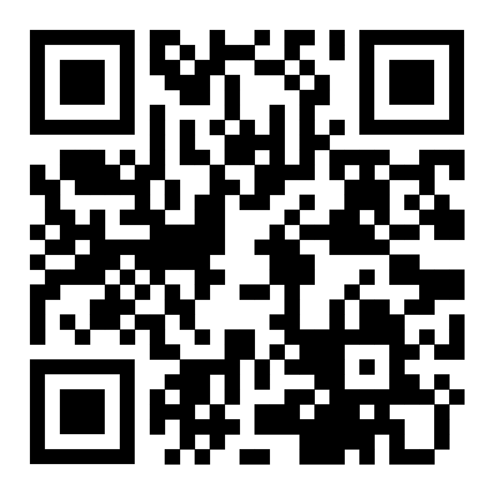

Study Room 232
QUIET
Thank you for keeping this space quiet!
Current Sound Level: 0
Noise level is acceptable.
Start Microphone
Presentation Demo
Disconnect Device
Need to report noise?
Scan the QR code to submit a room-specific noise report.

AWAITING QUIETER CONDITIONS
02:00
Confirming staff notification…
Alert will remain active until noise levels have improved.
VISUAL PREVIEW ONLY
Next Preview
Exit Preview